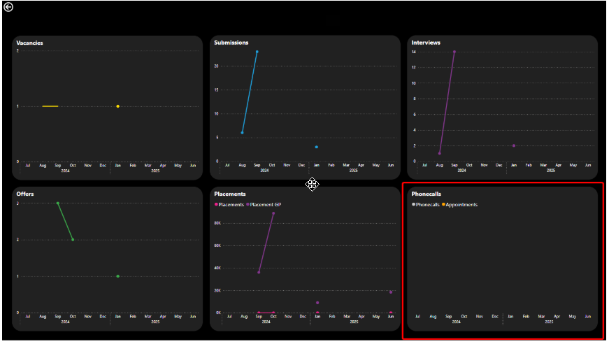
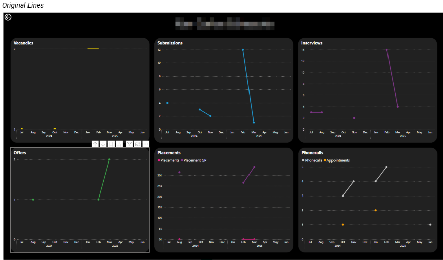
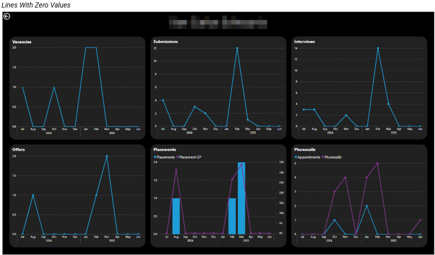
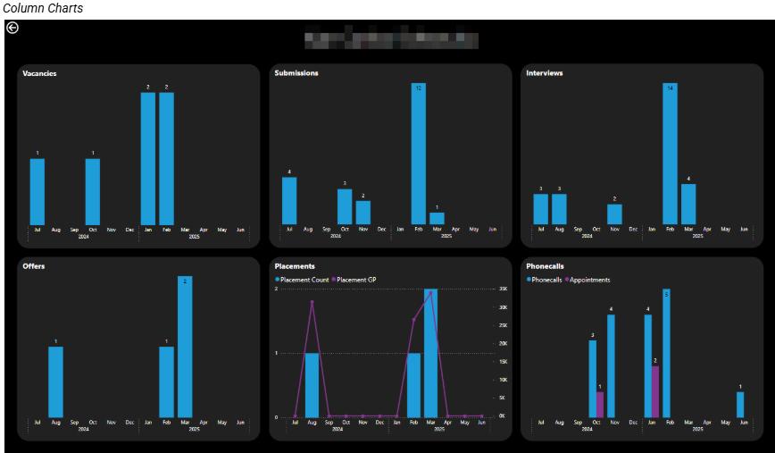

Context
We have an existing report which contains a standard table visual. The rows represent client contacts and the columns represent different KPIs.
The question was raised whether it was possible to drill through on one of the rows of the table to view more granular information, namely the performance for each of these KPIs over time for the given client contact.
The following is a write-up of the investigation:
1. Problem
The current iteration of the report gives us the current aggregates only for each of the KPIs. There is no way to view trends over time.
The idea is to add drill-through functionality to the table visual on the Client Contact page to enable the user to drill through on a specific client contact (the table rows are per client contact) to navigate the user to a page showing how each KPI has changed over time for that client contact. The specific ask is whether the previous 12 complete months can be displayed for the following KPIs:
- Vacancies
- Submissions
- Interviews
- Offers
- Placements and Gross Profit (one chart displaying both metrics)
- Calls & Appointments (one chart displaying both metrics)
The investigation needs to answer whether this can technically be done and what needs to be taken into account before committing to this.
2. Outcome
This is achievable but it comes with some technical and UX considerations.
The approach taken to prove the concept was to add a drill through page to the report with the DimClientContact[FullName] column as the drill-through key. As with all drill throughs, the filters applied on the source page are replicated on the target page.
2.1 Tooltip
Currently the table visual in the source page does not have a tooltip. The advantage of a tooltip is that the user can hover and drill through using the menu which appears as part of a tooltip. This is, however, not critical because we can still drill through by right-clicking on the table visual in the relevant row.
The drill-through can be initiated from any column in the table visual so we do not need to hover over the client contact name. If we hover anywhere over a given row, Power BI understands that we have implicitly filtered down to the one client contact we wish to see in the drill through page.
2.2 Blank KPIs
It could be the case that for a given client contact, one or more of the KPIs may not have data available for the selected time period. This will result in a visual which would be blank. Would we be happy with this outcome?

2.3 Line vs Column vs Another Type
From a UX point of view would columns be better than lines in the drill through visuals? By definition these are not the client contacts with the best numbers so there is a high chance that for some of the months, there might not be any data for some of the KPIs. This means some of the lines stop / start and so have gaps and look "broken" or disjointed.
Another solution might be to use measures which equate to zero so we guarantee values for all months and the lines would be continuous. And for the dual metric visuals we could use a combo chart.



The column chart approach provides the clearest representation because months with no activity are represented by an absence of columns. A line chart on the other hand can make missing periods appear as breaks in otherwise continuous data.
2.4 Use Case
We need to potentially weigh up the use case for this drill through functionality. The table visual has several rows and works fine in the scenario that you want to check certain client contact KPIs on an ad hoc basis. You can scroll down the table visual to find the relevant person and then drill through to view the more detailed visuals.
The key point though is that when you return to the original table visual, the table will "reset" and will render with the scroll bar at the top and the first row visible, not the row from which you drilled through.
So if the use case is for some sort of auditing purpose where the user must go into client contacts row by row, I would not recommend this as the approach. Instead perhaps a new page with the same visuals but with a client contact selector (e.g. a dropdown slicer) on it would provide better UX.
What Happened Next?
This drill through functionality was implemented since the use case would be ad hoc analysis. Column charts were used in the drill through because the missing values made more sense in these charts.